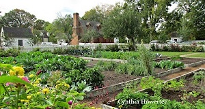

Home gardening is not a new phenomenon in the United States. Colonial kitchen
gardens provided the
majority of fresh produce for colonists in the 17th and 18th centuries (National Gallery of Art,
2021); "slave patches" of enslaved African Americans were necessary for supplementary nutrition and
cultural continuation (Eisnach & Covey, 2019); victory gardens augmented rations during WWI and
represented patriotic support during the 1940s (Virginia Museum of History & Culture).

Model of a colonial kitchen garden. Source: Cynthia Howerter
Today, 55% of Americans engage in home gardening activities (Mayers, 2023;
Miracle-Gro, 2021). This article uses garden and recipe data to help you plant your own produce section. From popular veggies and compatible plants to soil temperatures and harvest instructions, you will have all the information you need to successfully grow ingredients in your home garden.
In-Demand Delicacies
The most popular plants in Epicurious recipes. Mouse over to learn more.
Growing your own plants can be a difficult but rewarding experience. By tending to a home
garden, you can reduce your carbon footprint from food products. The Environmental Protection Agency reports that 10% of all greenhouse gases in the US come from the Agricultural sector,
which does not include transportation of the food (EPA). Choosing a handful of staple edible plants for your home decreases your emissions and increases your connection to the food that ends up on your plate.
Many gardeners rely on plant compatibilities to optimize their garden space. By choosing compatible plants, you can reduce your input costs and ensure a successful garden (Gardening Know How); you will no longer have to buy your staple vegetables and herbs. Home gardens also contribute to environmental health by housing diverse ecosystems that sustain carbon, nitrogen, and water cycles (Cornell Cooperative Extension).
The following graph shows common plants and their compatible neighbors. Each circle is a plant, and circles that are connected with a line are compatible. It is known by the garden community that plants that grow well together go well together" in the kitchen. Explore the network graph to learn more about herbs and vegetables that you like to eat.
Food Network
These plants are compatible in the garden and the kitchen. Hover on your favorites to learn more. Pull circles for a different view.
Plant Information
Since March 2022, food prices have increased by 8.3% (USDA).
By growing your own food you are less affected by rising food price and food shocks. The Packer's 2022 Fresh Trends survey reveals that potatoes, tomatoes, onions, carrots, and bell peppers were the most purchased vegetables by Americans in 2022. The same survey found that Americans actively tried to save money either by tightening their budget in other ares (43% of respondents) or buying less food (30%). Growing even one crop in a home garden can help Americans save money on their food budget. Additionally, home gardening produces more flavorful and nutritious edible plants that do not not travel thousands of miles before reaching the kitchen (University of Illinois Urbana-Champaign).
Use the Recipe Generator for inspiration! Before buying seeds, find the recipes and ingredients that spark your interest.